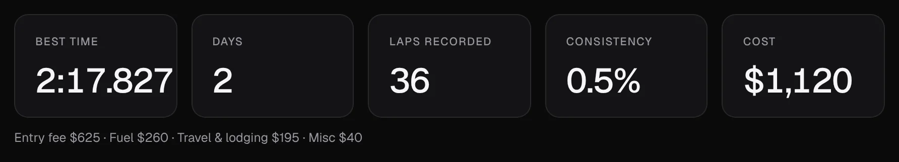

What does a track day cost?
The entry fee is the number on the registration page, and for most drivers it is less than half of what the day costs. The rest is fuel, the tires and brake pads you used up, getting there, and a few things you buy once. This page lists what to budget for, so the first invoice from the tire shop is not a surprise.
What you pay each day
| Cost | What drives it |
|---|---|
| Entry fee | Commonly a few hundred dollars a day. Well-known circuits and weekend dates cost more; weekday and evening events cost less. Novice groups usually include an instructor. |
| Fuel | A car on track can use fuel several times faster than on the road. Plan on a tank or more for the day, plus the drive there and back. Fuel sold at the circuit costs more than at the station down the road. |
| Track-day insurance | Most road policies exclude track use. Single-event cover is sold by specialist insurers and priced on the value you insure. Optional, and worth a careful read of your own policy. |
| Travel | Tolls, a hotel the night before, food. For a distant circuit this can match the entry fee. |
What you use up
This is the part people leave out. You do not pay for it on the day, but every session spends some of it:
- Tires. Usually the largest running cost. A set that lasts years on the road may last a handful of track days.
- Brake pads and rotors. Track pads cost more than road pads and wear quickly; rotors follow.
- Brake fluid. A flush with a high-temperature fluid before the season, and often again during it.
- Engine oil. Changed far more often than the road interval.
The honest way to count these is per hour of track time: divide what a set cost by the track hours it lasted, and multiply by the hours in a day. Tracking brake pads, tires and fluids shows how to work that out from your own car.
What you buy once
- A helmet. Organizers require a recent safety rating and state which ones they accept; check before you buy. Some rent helmets to first-timers.
- A tire pressure gauge and a torque wrench. The two tools you will use at every event.
- A pre-event inspection, if your organizer wants one signed by a shop.
Adding it up
An illustration, with invented numbers, for one day in a sports car on road-legal track tires:
| Item | Amount |
|---|---|
| Entry fee | $300 |
| Fuel | $90 |
| Travel and food | $120 |
| Tires: $1,200 a set over 8 days | $150 |
| Brake pads: $350 a set over 7 days | $50 |
| Fluids, per day | $30 |
| Total | $740 |
The entry fee is about 40% of that. Your own numbers will differ; the shape usually does not.
Spending less
- Weekday and evening events are cheaper and usually less crowded.
- Circuits you can drive to and back in a day save the hotel.
- A harder-wearing tire often costs less per day than a stickier one, and teaches as much early on.
- Seat time over upgrades. In the first seasons an extra day with an instructor finds more time than any part.
- Looking after the brakes and tires — a proper cool-down lap, sensible tire pressures — makes both last longer.
Keeping count in Track Evolution
Each event in Track Evolution can carry what it cost: entry fee, fuel, travel and lodging, and miscellaneous, each optional. An event with nothing entered has no cost recorded, not a cost of zero, so it never drags an average down. The event page shows the total and its breakdown. Entering costs is free, on the web and in the phone apps.

With Pro, the app adds them up: what each track has cost you, what each car has cost including every part fitted to it, and in the web app's year in review, the season's total by line item — with, for each track where you set a new best, what those seconds cost per second found. The garage gives each retired set of pads or tires its cost per track hour.
Costs are private. They never appear on a share page or a leaderboard, and a coach you share your logbook with does not see them.